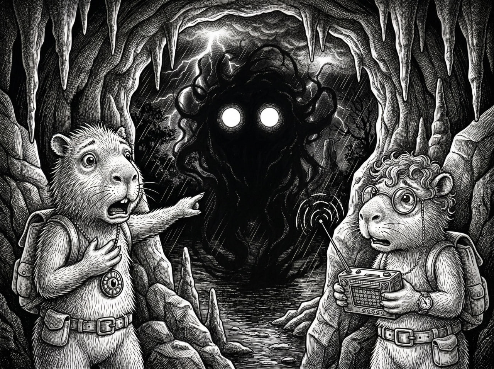
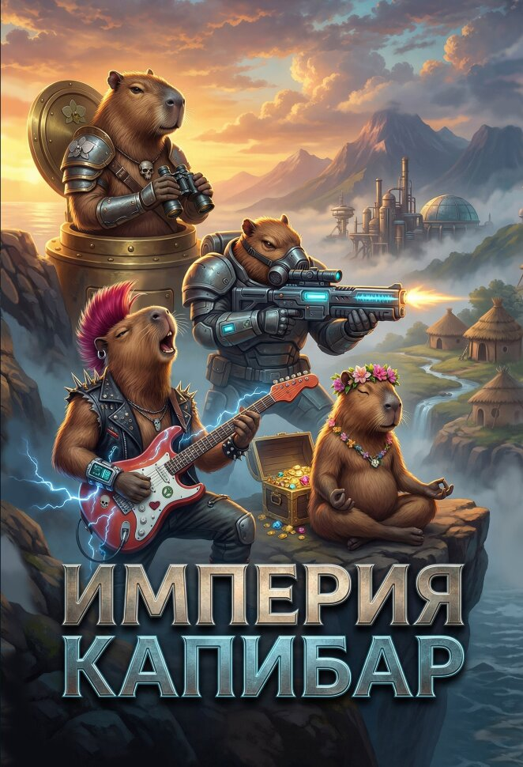

Фрагмент

Киран знал, что нарушает правила. Но правила были для тех, кто боялся истины.
Он склонился над своим рабочим столом, регулируя последний винт на самодельном радиоприёмнике. Светлая шерсть на его лапах слегка подрагивала от волнения. Очки в круглой золотистой оправе сползли на кончик носа, и он поправил их когтем, не отрывая взгляда от схемы.
— Кир, ты уверен, что это хорошая идея? — прошептал Пилип, нервно теребя оберег на шее, – «глаз воды», как его ещё называли, полученный от бабушки. Он сидел у окна мастерской, поглядывая на улицу, и его тёмно-бурая шерсть казалась почти чёрной в полумраке. — Если Старейшины узнают, что мы пытаемся поймать сигнал с Большой Воды...
— Старейшины, — фыркнул Киран, не поднимая головы. — Они запрещают все, что не понимают. Наука — не преступление, Пил.
Пилип скрестил лапы на груди. Его взъерошенная шерсть выглядела ещё более растрёпанной в тусклом свете керосиновой лампы. В Старом городе электричество всегда было под контролем, особенно ночью. Особенно для подростков, которым не следовало возиться с запретными технологиями.
— Это не просто наука, — пробормотал Пилип. — Это... связь с внешним миром. Ты знаешь, что говорят легенды. Мы изолированы не просто так.
Киран наконец поднял голову, его глаза блестели в полумраке.
— Именно поэтому мы и делаем это. Чтобы доказать, что легенды — это просто сказки для несмышлёнышей.
Он подключил последний провод. Радио со встроенным радаром щёлкнуло, датчики засветились тусклым янтарным светом. Киран повернул ручку настройки, и комната наполнилась статическим шипением. Пилип вздрогнул. Звук был громче, чем он ожидал.
— Тише! — прошипел он. — Родители в соседней комнате!
Киран усмехнулся и убавил громкость. Его лапа медленно настраивала радиоприёмник, просеивая частоты. Шшшш... шшшш... Ничего кроме белого шума и редких треск.
— Видишь? — сказал Киран торжествующе. — Никаких сигналов с континента. Возможно, их технологии не так развиты, как мы думали. Или мы слишком далеко...
И тут радио зарычало. Не статическим шумом и не помехами. Низкий, ритмичный, гортанный звук прорезал тишину мастерской. Пилип в страхе обернулся, глядя на друга.
— Что это?! — выдохнул он.
Киран замер. Его уши встали торчком, сердце забилось быстрее. Он знал этот звук. Каждый детёныш на Тихом Приюте знал его из колыбельных и предостерегающих историй. Это был самый настоящий Рык Духа Ягуара.
— Это невозможно, — пробормотал Киран, дрожащей лапой поворачивая ручку настройки.
Звук становился громче. Яснее. Он вибрировал в воздухе, проникал в кости, заставлял шерсть вставать дыбом.
— Выключи это! — закричал Пилип, забыв о тишине. — Выключи сейчас же!
Но Киран не мог. Его разум работал на максимальной скорости, анализируя частоту, тональность, паттерн звука. Это не мог быть дух. Духов не существовало. Это была техника. Передатчик. Что-то старое, забытое. А экран радара показывал, что источник спрятан в горах...
— Послушай, — прошептал он, и в его голосе впервые появилась неуверенность. — Это не магия, Пип. Это закрытая частота. Кто-то... что-то передает сигнал.
— С горы, — прокашлялся Пилип, его глаза расширились. — Откуда-то сверху. Кир, это же...
— Запретная зона, — закончил Киран. Он записал координаты в блокнот, его лапа чертила цифры с лихорадочной точностью. — Старое Табу. Гора, куда никто не поднимается.
Рык продолжался. Пугающий и мерный, словно нечто древнее пыталось пробиться к ним через радиоприемник. Киран выключил тумблер. Тишина обрушилась на мастерскую как холодная вода.
Они сидели молча, глядя друг на друга. Пилип тяжело дышал, Киран барабанил когтями по столу, беспокойный разум не по годам умного капибары уже строил планы.
— Мы должны подняться туда, — сказал он наконец.
— Что?! — Пилип подскочил. — Ты сошёл с ума! Это же Табу! Гора принадлежит Духу! Там...
— Там старая техника, — перебил его Киран, его голос обрел прежнюю уверенность. — Военная или шпионская аппаратура. Может быть, остатки от первых поселенцев. Что-то, что создает эту акустическую иллюзию.
— Иллюзию? — Пилип покачал головой. — Кир, ты слышал это! Это не...
— Это именно то, что я слышал, — твердо сказал Киран. Он встал, сунул блокнот в свой вечный рюкзак с инструментами. — Закрытая частота, Пип. Не духи. Не магия. Технология. И мы собираемся её найти.
— Нет, — Пилип попятился к двери. — Нет, нет, нет. Я не пойду туда. Это безумие.
Киран посмотрел на своего друга. Увидел страх в его глазах, вздыбившуюся шерсть, дрожащие лапы…
— Подумай об этом, — сказал он мягче. — Если мы докажем, что Дух Ягуара — это просто какая-то древняя технология, мы разрушим главное Табу острова. Мы станем героями. Наши портреты будут висеть в школах!
— Или мы умрём, — пробормотал Пилип.
— От старого оборудования? — Киран усмехнулся. — Давай, Пип. Ты же знаешь меня. Когда я был неправ?
Пилип открыл рот, чтобы перечислить как минимум дюжину случаев, но Киран уже копался в рюкзаке, доставая карту острова.
— Смотри, — он развернул потертую бумагу на столе. — Горная гряда находится в двух часах ходьбы от Старого города. Если мы выйдем рано утром, вернёмся до заката. Никто даже не заметит.
— Там туман, — слабо возразил Пилип. — Батареи создают туман. Видимость...
— У меня есть компас, — Киран постучал по своим самодельным часам. — И фонарь. И ты.
Пилип застонал. Он знал, что проиграл. Когда Киран принимал решение, остановить его было невозможно. Лучше пойти с ним и хотя бы попытаться уберечь от самых безумных идей.
— Хорошо, — выдохнул он наконец. — Но при первом признаке опасности мы возвращаемся. Договор?
— Договор, — кивнул Киран, и его глаза блеснули азартом.
Он снова посмотрел на радио, теперь мёртвое и безмолвное. Но где-то там, высоко в горах, в запретной зоне, что-то рычало в ночи. Что-то, что они собирались найти. Пилип проследил за взглядом друга и снова сжал оберег на шее. Бабушка, которая дала ему этот амулет, шептала о горах. О жёлтых глазах в темноте. О том, что некоторые тайны должны оставаться тайнами. Но Киран не верил в тайны. А Пилип... Пилип просто молился, чтобы его друг был прав.
